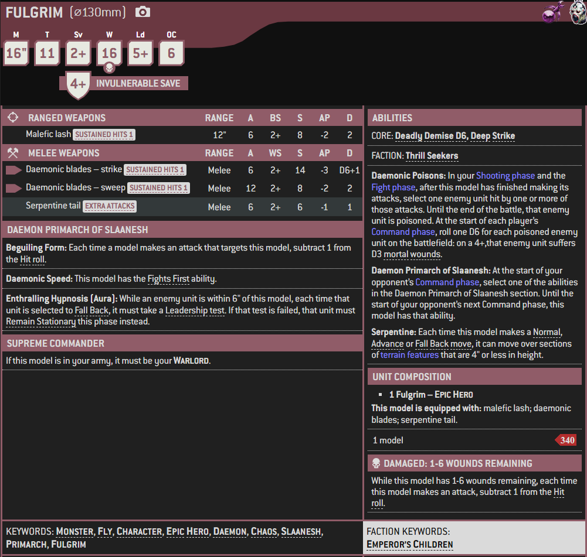

Fulgrim, also known in the time before the Horus Heresy as "The Phoenician," is the primarch of the Emperor's Children Traitor Legion. He possessed silvery-white hair and was quite vainglorious, as his entire life was dedicated to the pursuit of perfection in all things; physical, mental and spiritual.
Today, Fulgrim is a four-armed, serpentine Daemon Prince of Slaanesh who is believed to reside on a Daemon World called Callax somewhere within the Eye of Terror or within the Realm of Chaos itself.
Unknown to almost all, including his own Chaos Space Marines, Fulgrim expressed remorse, repenting his corruption by the Ruinous Powers during the Drop Site Massacre on Isstvan V during the opening days of the Horus Heresy nearly ten millennia ago. A Greater Daemon of Slaanesh residing within the Blade of the Laer, a Chaos artefact wielded by Fulgrim, took advantage of this brief mental weakness to possess the primarch's body for a time, but Fulgrim used his spiritual imprisonment to further explore the power of Chaos and eventually turned the tables on the Daemon and forced it into an imprisonment of its own to regain control of his body.
Fulgrim emerged from that experience even more committed to the pursuit of the path of sensation offered by Slaanesh and Chaos, and before the Horus Heresy had ended he was rewarded for his devotion with ascension to become a Daemon Prince of the god of excess. His exact location currently remains unknown to the Imperium and the majority of the Heretic Astartes of the Emperor's Children Traitor Legion who still wander the galaxy in pursuit of their own pleasure and Daemonic ascension. Rumours and unconfirmed reports have spread since the opening of the Great Rift in the Era Indomitus that Fulgrim is active across the galaxy once more.
